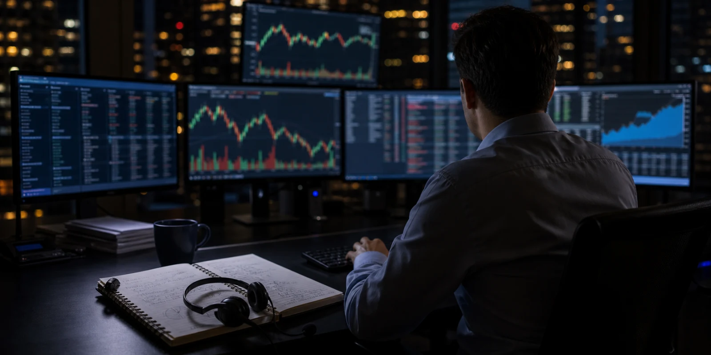

미국주식 투자자가 가장 자주 마주하는 장면 중 하나는 장 마감 뒤 실적 발표와 시간외 급등락입니다. 숫자가 공개되는 순간 가격이 움직이고 뉴스 알림은 곧바로 큰 등락률을 보여줍니다. 하지만 시간외 거래는 본장보다 유동성이 얇고 참여자가 제한적입니다. 그래서 시간외 거래대금이 터진 종목은 그 자체로 끝난 사건이 아니라 다음 날 본장이 확인해야 할 예고편으로 보아야 합니다.
얇은 장의 큰 움직임

시간외 거래는 가격 발견의 첫 단계이지만 모든 투자자의 판단이 반영된 시장은 아닙니다. 호가가 얇고 스프레드가 넓으면 작은 주문에도 가격이 크게 움직일 수 있습니다. 실적 headline을 빠르게 읽은 알고리즘과 단기 트레이더가 먼저 움직이고, 기관 투자자는 컨퍼런스콜과 추가 자료를 확인한 뒤 다음 날 본장에서 더 큰 주문을 낼 수 있습니다.
그래서 시간외 상승률이나 하락률은 방향의 힌트일 뿐입니다. 중요한 것은 거래대금이 과거 실적 발표 때보다 얼마나 큰지, 가격이 발표 직후 한 번 움직인 뒤 유지되는지, 컨퍼런스콜 중에 방향이 바뀌는지입니다. 시간외 차트는 숫자보다 질문을 만들기 위해 보는 편이 좋습니다.
컨퍼런스콜의 두 번째 가격
실적 발표 직후 첫 가격은 매출, EPS, 가이던스 표를 보고 형성됩니다. 두 번째 가격은 컨퍼런스콜에서 만들어집니다. 경영진이 수요 둔화를 인정하는지, 가격 인상 여력을 말하는지, 비용 절감이 구조적인지, 재고와 주문 취소를 어떻게 설명하는지에 따라 시간외 흐름은 다시 바뀔 수 있습니다.
특히 미국주식은 애널리스트 질문이 중요합니다. 시장이 이미 걱정하던 부분을 경영진이 명확히 답하면 시간외 낙폭이 줄 수 있고, 반대로 애매한 답변이 이어지면 좋은 headline도 힘을 잃을 수 있습니다. 시간외 거래대금이 큰 종목을 다룰 때는 실적표와 콜 transcript를 함께 읽어야 합니다.
본장이 검증하는 것
다음 날 본장은 시간외 반응을 검증합니다. 장 초반 갭이 유지되는지, 첫 한 시간 거래대금이 평소보다 얼마나 큰지, 전일 시간외 고점과 저점을 어떻게 통과하는지 확인해야 합니다. 본장에서 거래대금이 따라오지 않으면 시간외 반응은 과잉 해석으로 끝날 수 있습니다. 반대로 본장에서도 거래가 두껍게 붙으면 기관 자금이 방향을 확인하고 있다는 신호일 수 있습니다.
프리마켓과 본장을 나누어 보는 것도 필요합니다. 프리마켓은 유럽 시간대와 미국 개장 전 뉴스가 섞이는 구간이고, 본장은 ETF와 기관 주문, 옵션 헤지가 본격적으로 들어오는 구간입니다. 같은 등락률이라도 어느 구간에서 거래대금이 붙었는지에 따라 의미가 달라집니다.
종목을 넓게 추적하는 방식
시간외 거래대금이 터지는 종목은 대형 기술주만이 아닙니다. 중소형 바이오텍의 임상 결과, 소매기업의 가이던스 변경, 금융주의 손실 충당금, 산업재의 수주잔고, 에너지 기업의 생산 전망도 장 마감 뒤 큰 거래를 만들 수 있습니다. 미국주식 데스크는 거래대금 급증 종목을 업종별 질문으로 분류해야 합니다.
독자는 다음 항목을 차례로 확인하면 됩니다. 발표 전 기대치, 발표 직후 시간외 거래대금, 컨퍼런스콜 발언, 애널리스트 추정치 변화, 프리마켓 흐름, 본장 첫 한 시간의 거래대금, 종가 위치입니다. 이 순서를 따르면 시간외 등락률에 끌려가기보다 시장이 실제로 확인한 것을 볼 수 있습니다.
시간외 거래는 빠르지만 얇고, 본장은 느리지만 더 많은 자금이 들어옵니다. 미국주식에서 실적 뒤 거래대금이 터진 종목을 볼 때는 두 시장의 역할을 나누어야 합니다. 그렇게 보면 큰 숫자 하나보다 가격이 언제, 어떤 유동성 속에서, 누구의 확인을 거쳐 움직였는지가 더 분명해집니다.
시간외 거래는 빠르게 움직이기 때문에 headline 반응이 과장될 수 있습니다. 정규장에서 수백만 주가 거래되는 종목도 시간외에는 훨씬 얇은 호가로 가격이 형성됩니다. 그래서 큰 폭의 상승이나 하락이 보이면 먼저 거래량이 과거 평균 시간외 거래보다 얼마나 큰지 확인해야 합니다.
실적 발표 뒤에는 회사의 보도자료와 컨퍼런스콜 사이에 가격이 한 번 더 바뀔 수 있습니다. 처음에는 EPS와 매출이 예상치를 넘었다는 이유로 오르다가, 콜에서 마진 압박이나 수요 둔화가 언급되면 되돌릴 수 있습니다. 반대로 headline이 약해도 가이던스 설명이 설득력 있으면 시간외 낙폭이 줄어드는 경우도 있습니다.
다음 날 프리마켓은 또 다른 필터입니다. 해외 투자자와 단기 트레이더가 먼저 반응하고, 미국 본장 개장 뒤에는 ETF와 기관 주문, 옵션 헤지가 더해집니다. 시간외 급등 종목이 본장 첫 한 시간에도 전일 시간외 가격대를 지키는지, 아니면 거래대금 없이 밀리는지 확인해야 실제 수급을 읽을 수 있습니다.
미국주식 desk는 실적 발표 종목을 대형주에만 한정하지 않아야 합니다. 중소형 바이오텍의 임상 결과, 소매기업의 동일점포 매출, 은행의 예대마진과 손실 충당금, 산업재의 수주잔고 모두 시간외 거래대금을 크게 만들 수 있습니다. 중요한 것은 발표 후 어느 가격에서 충분한 유동성이 붙었는지입니다.
시간외 거래를 볼 때는 거래량 단위도 조심해야 합니다. 정규장에서 수천만 주가 거래되는 종목의 시간외 수십만 주와, 평소 거래가 얇은 중소형주의 수십만 주는 전혀 다른 의미를 갖습니다. 절대 거래량보다 평소 대비 증가율과 호가 깊이를 함께 봐야 반응의 크기를 제대로 읽을 수 있습니다.
뉴스가 장 마감 뒤 나오는 경우에는 여러 정보가 한꺼번에 겹칩니다. 실적 보도자료, 8-K 제출, 컨퍼런스콜, 애널리스트 리포트, 다음 날 매크로 지표가 같은 밤에 이어질 수 있습니다. 시간외 가격이 움직인 이유를 한 가지로 단정하기보다 어떤 자료가 몇 시에 나왔는지 시간표를 만들어 보는 편이 정확합니다.
본장 개장 뒤에는 프리마켓과 다른 참여자가 들어옵니다. 장기 기관, ETF, 옵션 마켓메이커, 단기 트레이더가 모두 본장 유동성을 만듭니다. 시간외 고점이 본장에서 곧바로 돌파되는지, 아니면 첫 매도 압력에 밀리는지 보면 밤사이 반응이 얼마나 폭넓은 동의를 얻었는지 알 수 있습니다.
이 기준은 모든 업종에 적용할 수 있습니다. 기술주는 가이던스와 마진, 바이오는 임상 데이터와 현금, 소매주는 재고와 동일점포 매출, 금융주는 대손 비용과 예금 흐름이 중심입니다. 시간외 거래대금이 터진 종목을 다룰 때는 업종별로 다른 핵심 지표를 붙여야 독자가 다음 본장을 준비할 수 있습니다.